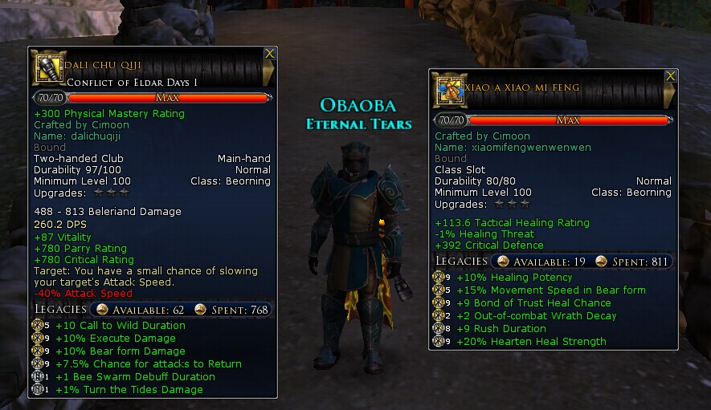

手翻武器和雕像天赋。下面是做的2件比较通用。武器是DPS天赋，2个B区蜂群DEBUFF很给力，可以选择点满或者换属性，最后一个天赋换成属性，本人没来的换。雕像上“+1 out-of-combat wrath decay 减少脱战愤怒衰退”特地去论坛看了下，有玩家说是BUG是-不是+。本来脱战愤怒衰退是5，战斗中是3，点了天赋应该是脱战愤怒衰退为3，结果变7了。衰退可以暂时换成slam无消耗，因为感觉输出循环上用不到slam，所以个人不是很需要。T的话可以放上爪击和咆哮，看个人喜好，拉的住就好。
